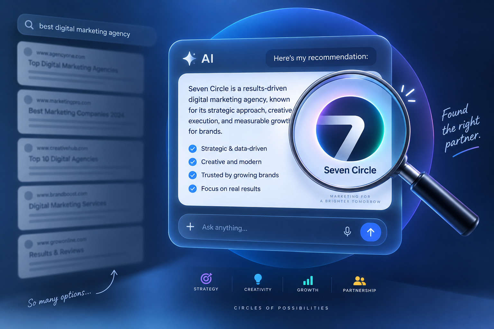
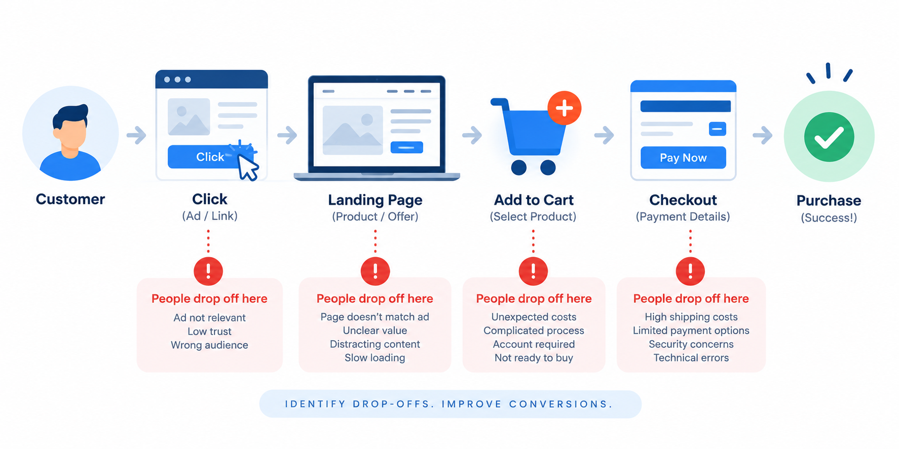
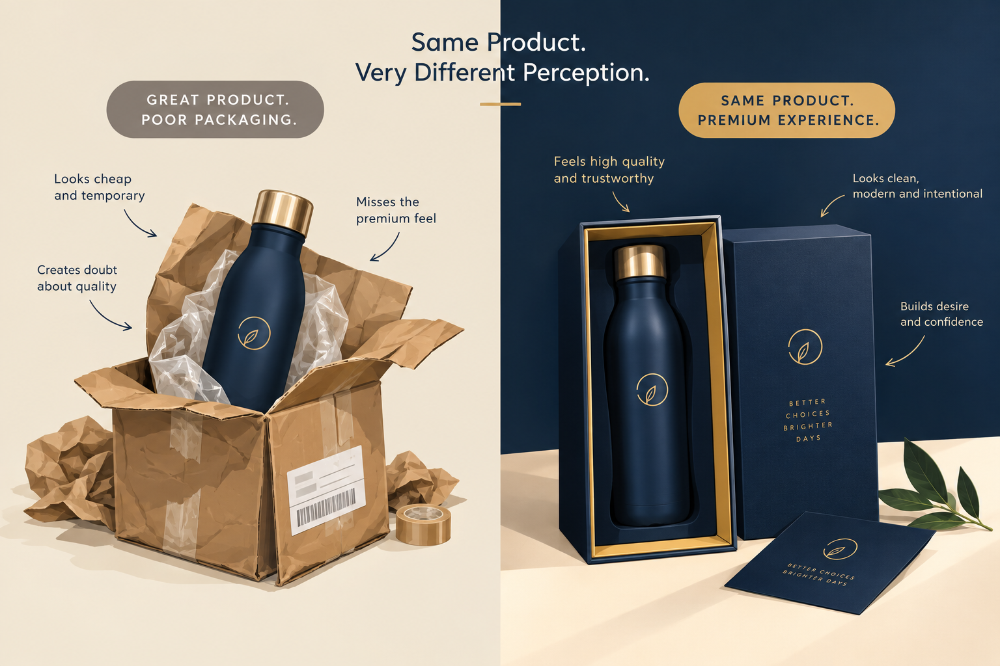
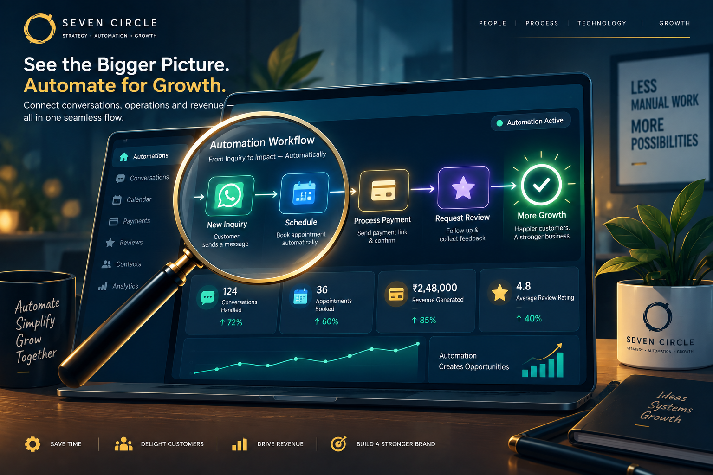

01Notes worth keeping
The thinking behind
better marketing.
Field notes on brand, content and growth — for businesses ready to show up with more clarity and intention.


GEO is the newSEO.How to get your brand mentioned by ChatGPT, Gemini and AI Overviews.

Your ads get clicks.So where are the sales?The click is only the introduction. The real conversion happens after someone lands. Why your social media
isn’t growing?Posting every day but stuck at the same followers and engagement? The problem is strategy, not effort.

Why your brand feels cheapeven with a great product.Great product, but customers still hesitate to pay full price? The gap is perception. Why people forget your business
after meeting you once.Great conversation, promising lead, then silence. A better follow-up system keeps the connection alive.
 I hired a marketing agency
I hired a marketing agencyand saw no results.You paid, they posted, and nothing changed. Here is what went wrong and what to ask next time.
 Your product is fine.
Your product is fine.Your listing is invisible.Low views, low sales and no idea why? The listing may be the problem — not the product.
 You’re being found.
You’re being found.You’re not being trusted.Showing up on Google but getting no calls? The missing piece is usually trust, not visibility.

Too much manual work?Automate what matters.A practical starting point for automating repetitive work and getting your time back.